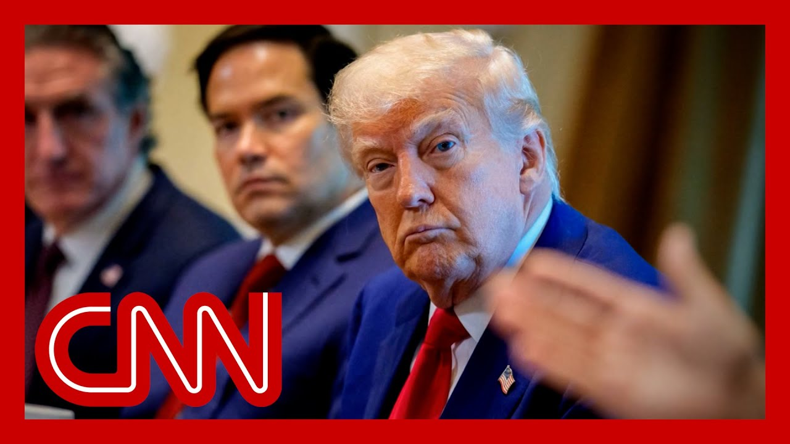

来B站一起耍【Global每日英语简报】
【Trump says economy will be “okay” in the long-term if there is a short-term recession】
Summary: 特朗普接受NBC采访时表示，即使贸易战导致短期衰退，长期经济仍将向好。然而， footwear industry等行业警告称，贸易战已导致企业倒闭和失业激增，要求政府立即行动。白宫则强调当前是“过渡期”，但市场对政策不确定性感到担忧。
摘要： Trump told NBC that a short-term recession due to his trade war is acceptable for long-term gains. Meanwhile, the footwear industry warns of mass closures and job losses, calling it an emergency. The White House calls this a "transition period," but market uncertainty persists.

⏱️ Estimated Reading Time: 15 min
Trump just telling NBC news that it's okay if America enters a short recess thanks to his trade war.
特朗普刚刚告诉NBC新闻，即使美国因他的贸易战陷入短期衰退也没关系。
Are you comfortable with the cou potentially dipping into a reces for a period of time?
你能接受经济可能在一段时间内陷入衰退吗？
If you are able to achieve your goals?
如果你能实现目标呢？
Well, you know, you say some people on Wall Stre say, well, I tell you something.
你知道，华尔街有些人说，我告诉你吧。
Some people on Wall Street say that we're going to have the greatest economy in history.
华尔街有些人说我们将迎来史上最强劲的经济。
Why don't you talk about them?
你为什么不提他们？
Because some people on Wall Stre say, this is.
因为华尔街有些人说，这就是。
That's what I'm ge That's what I'm getting at.
这就是我想说的。
It's just there are many people on Wa say this is going to be the greatest windfall ever.
只是华尔街很多人说这将是有史以来最大的意外之财。
And that's my question over the long term.
这是我的长期问题。
Is it okay in the short term to have a recession?
短期衰退可以接受吗？
Look, yeah, it's everything's okay.
听着，是的，一切都没问题。
What we are.
我们正在。
I said this is a transition peri I think we're going to do fantas.
我说这是过渡期，我认为我们会做得很好。
Of course, Trump has promised an economic boom.
当然，特朗普承诺过经济繁荣。
As for a windfall from those tar if that's what he's referring to that's not something people on Wall Street have thoug at least in terms of a windfall.
至于关税带来的意外之财，华尔街并不这么认为。
His word. It all comes as one of the natio biggest industries.
他的话发布之际，全国最大行业之一发出警告。
Tonight is sounding the alarm, w that hundreds of businesses are shuttering and tens of thousands of jobs will be gone with empty store sh because of Trump's trade war.
今晚 footwear industry 警告，因贸易战数百家企业倒闭，数万岗位消失。
That is not just a minor recessi It is the warning tonight for the footwear industry.
这不仅是轻微衰退，而是 footwear industry 的紧急警告。
They have just written a letter in which they write, if the current situation continu American footwear workers and consumers will suffer.
他们在信中写道：若现状持续，美国工人和消费者将受害。
This is an emergency that requir immediate action and attention.
这是需要立即行动的紧急事件。
Jeff, we just heard the presiden talking about the economy in this new interview with NBC, pushing back on fears of a reces.
杰夫，总统在NBC采访中淡化衰退担忧。
What what is the thinking in the white House right now on the economic scenar as we enter another weekend where they've said there would be multiple trade de and we do not yet have one.
白宫如何看待当前经济形势？此前称将有多个贸易协议，但至今未达成。
Erin, one word I heard there from the president. It's something we've been hearin really all week a transition.
艾琳，总统反复提到“过渡期”一词。
We're in a transition period. The economy is going to be in a transition period.
我们正处于过渡期，经济将经历过渡期。
That was not a word that was used when Donald Trump was running for office.
特朗普竞选时从未提过“过渡期”。
There was no mention of a transition period through his tariff policies.
他的关税政策中从未提及过渡期。
Ess Hold on. So I thought that was interestin and something we have really hea say repeatedly.
这很有趣且被反复强调。
But you're right, at the end of here at the end of this week here, we've heard much talk about how the president wants his advisors to reach some type of a trade de.
但本周白宫频繁讨论要求顾问达成贸易协议。
There has not been one announced Erin, it was very silent around today at the white House.
但至今未宣布任何协议，今日白宫异常安静。
The president was spending the d at his Mar-A-Lago resort.
总统今日在海湖庄园。
He has a Republican fundraising this weekend. He will be returning here on Sun but we will see if a trade deal next week.
他周末参加共和党筹款活动，周日返回，未知下周会否达成协议。
But as of now, there have not be The question is why are they not finished?
问题是为何协议未完成？
Are the partners not negotiating But the bottom line of this, the president, said he would lower prices.
是伙伴不愿谈判？但关键是总统曾承诺降价。
Now he is essentially. And he did again in the intervie urging people that the prices may go up a bit, even a recession potentially.
如今他在采访中却暗示价格可能上涨，甚至可能出现衰退。
So the white House is, it was thrilled to see the jobs at today. Hold steady.
白宫对今日就业数据稳定感到高兴。
The president once again called for the Federal Reserve to lower interest rates.
总统再次呼吁美联储降息。
They meet next week. No signs that they will do that.
美联储下周开会，但无降息迹象。
But again, calling for a transition period. Not something he did when he sought the office.
他再次强调“过渡期”，而竞选时从未提及。
No, no. And he said, of course it would begin the day the day that he took office.
他曾说经济繁荣将从就职日开始。
Thanks very much, Jeff Zeleny at the white House. Everyone, everyone's here with m.
感谢白宫的杰夫·泽勒尼。
So, Dan, you know, you hear Trum He was saying that obviously you said you would accept a small recession in the short t because it's worth it in the lon.
丹，特朗普称愿接受短期衰退以换取长期利益。
But then he talked about all these people on Wall Street. he said, who thinks that what he's doing is great and that it's going to bring in a windfall magnitude of 25 years old on the.
但他又引用华尔街观点称政策将带来25年一遇的繁荣。
There's no one out there that would view this policy as b And the the reality is and talk a little talk about that.
现实中无人认为该政策有益。
The market's been up because Wall Street knows they're going to have to take st get deals done.
股市上涨因华尔街预期协议将达成。
Yeah. And no one wants a recession.
无人希望衰退。
And then you look at and they assume he doesn't eithe except for he just said he's okay with a sm.
人们原以为他也不愿衰退，但他刚表示可接受轻微衰退。
Again him saying that in reality it's the worst thing ever. One is stagflation.
实际上这是最糟情况，可能引发滞胀。
And that's where the market is telling Troy telling all the advisers, whether it's India, you gotta get deals on the table.
市场正警告顾问们必须尽快达成协议。
Otherwise markets market's going to lose patience.
否则市场将失去耐心。
Windfall you know right. You know it. It's baffling.
所谓“意外之财”令人困惑。
I'm sitting there trading the market every day. We've had nine days of incredibly bullish market rig.
我每日交易，目睹股市连续9天大涨。
Advances versus declines have be And we are we've regained not all we've regained some numb.
涨跌比显示我们已收复部分失地。
Yes. Since you know everybody keeps saying that we've regained all the numb since the Liberation Day. It's n.
但所谓“已完全收复失地”并不准确。
There are some that we see so mu First of all confidence hasn't been eaten away.
信心尚未完全恢复。
There are a lot of stocks that are not on the exact same a As far as the indices are up. Ri.
许多个股表现落后于指数涨幅。
That's clear. Right? Some of the bigger names even in.
部分大盘股也如此。
Okay. My gut is I'm trying to make sense of t on a day to day basis when you've got strong market 90 handles on the S&P seven, 800 points on the Dow.
标普涨90点、道指涨800点之际，我试图理解市场逻辑。
And you're seeing a broad based And it's baffling to me that we.
全面上涨令人困惑。
But my only the only way I could interpret it is that Wall Street is a leading indicator.
唯一解释是华尔街具有前瞻性。
Well, because they think that he is go back off and end this because it's not good for the ec but to give a right and then, yeah, yeah yeah.
他们认为总统将终止贸易战。
But I, I, I'm, I'm hoping you know you'll see the market and the economy go in concert.
希望市场与经济能同步。
Sometimes they diverge and sometimes Wall Street is what takes us out of this stuff.
有时二者背离，但华尔街常引领复苏。
And my hope is that this rally we're seeing is what pulls us out.
希望当前涨势能带动经济。
That works if it's a wealth effe if you get more people as well, they see their stock market, they see that portfolio goes up.
若财富效应使更多人因股市上涨增加消费。
Therefore they feel wealthier. And as they feel wealthier, they go into a consumer spending.
人们感觉更富裕时会增加消费。
But the problem in this case is that absent the market gains, right, there's nothing else there underpinning it.
但问题是若剔除股市涨幅，经济缺乏支撑。
It's a hope and a pressure that's really pushing the market mainstream.
当前涨势由预期和压力驱动。
America is not right money in th And if you're not in the market if you look at let me just give the president the benefit of the doubt.
非股市投资者未受益。
If you talk about a transitional period, yes. Reagan hadn't had a recession in Thatcher had a recession in the first few years, but they had solid.
里根和撒切尔初期也经历衰退，但有扎实政策。
Well, I could not make policies based on monetarism, love it or Right, right. The required that sort of that sort of medicine, this is just wanton and rich.
当前政策缺乏严谨理论基础。
I also it's medicine, but it takes 4 to 5 years to build a factory.
建工厂需4-5年时间。
What's the reality of the situation even when you look at center is.
现实情况如何？
But that's right. And and even when you look at Ap it's really India. That's how they're getting aroun a lot of the that and they're waiting for.
企业正通过印度等规避关税。
All rig Can I give you the white. Sure. Hello. Oh this is going to get me the k.
请看白板数据。
He's going to love it. So the footwear industry you kno because they told Matt Egan today from CNN no amount of tariffs are going to bring the jobs here.
footwear industry 明确表示关税不会使就业回流。
We pay the tariffs. The American consumers pay the t.
关税最终由美国消费者承担。
These are not external revenue s They couldn't be more clear.
这不是外部收入来源。
So here's a number. Here's the white board. Are you ready 9,999%.
数据显示99.99% footwear 依赖进口。
That is the amount of footwear made outside the United States. It's bought in the United States.
美国市场99.99% footwear 产自海外。
That's what it means. No amount of tariffs is going to bring this back.
关税无法改变这一现状。
And we should not whine about 99 It doesn't get higher than that.
99.99%已是极限值。
You know, look we know what jobs are Americans going to start taking that 1 to.
美国人不会从事那0.01%的岗位。
Yeah. If you said yes it's 4 or 5 year.
即使回流也需4-5年。
But if when you when I speak to people who are seeing things through Trump glasses, they're saying, yes, but who is going to be building those factories?
特朗普支持者反问：谁来建这些工厂？
Right. We're going to start that right out of the gate. And then that way then then Trum is lived up to his promise that we are going to be putting those are manufacturing factorie.
他们相信特朗普会兑现建厂承诺。
those are not footwear factories And that's part and we've talked about looking as the boots start to OD, you see the shortages come throu.
但 footwear 工厂不会回流，短缺已现。
We'll give you a twinge at our N.
我们将在报道中提及。
We should make them in new Jerse if you like, 100 hour ones, you make them in Vietnam and Chi.
若想生产高价商品，越南和中国仍是首选。
Look what China did when they when when he, when he, did the ports and he got picked a fight with China and sa we're poisoning with everybody b.
中国在贸易战中鼓励工厂直接向消费者销售。
And they had everyone in China, they had people in the factories there who are making the really end luxury goods, actually making advertisements that you can buy this stuff directly from us.
中国工厂直接打广告销售奢侈品。
Right. The stuff you're buying from Her is not Hermes goods. They're being made here.
所谓“爱马仕”商品实为中国产。
All. I've been waiting 15 years to use this quote. Well, go for it.
引用Laura Tyson名言：
Laura Tyson, the economic and former economic and the principal of London Business School guru Laura Tyson, wrote in her book many years ago, whose perfume that the America will have a shoe industry when Americans are prepared to pay more for shoes.
“只有当美国人愿为鞋子付更高价时，美国才会重现制鞋业。”
And if you take now, today, I mean the moment for the quote actually I just wrote in 20.
如今正是引用此言的时机。
Tough men got the whiteboard and he had that quote, competition. That is true at the moment.
当前竞争态势印证了这一点。
I mean, I'm not going to show up in my famous shoes. You know, it's made in China the moment that made if these were made in the US, it would cost more.
我的鞋若在美国生产会更贵。
Yeah. Yes, we got it right. Well, and that's what when you came back to Scott Bens you know, said, well, the essence of the America is not cheap goods, of course.
美国精神不在于廉价商品。
I mean, there is a philosophical we could have about the American but to many people, in the way we live the American dream, that is the American, and it all goes back to in us.
但许多人将“美国梦”与低价商品挂钩。
You like good. You don't want to produce him. And it comes down to if you like $3,500 iPhones, we should make them in the US.
若喜欢3500美元的iPhone，就该在美国生产。
If you like thousand dollar ones in China or even in India, there's a sophisticated point that you made though a moment ag which you talked about debt and Americans living beyond thei.
若喜欢中国或印度产的千元手机，则涉及美国人超前消费问题。
The People's Daily in China made exactly that point recently but it said, fine, America, you.
《人民日报》指出美国入不敷出。
But the real problem is America is living beyond its means, and its productivity gains do not justify the standard.
根本问题在于美国生活水平超出生产力支撑。